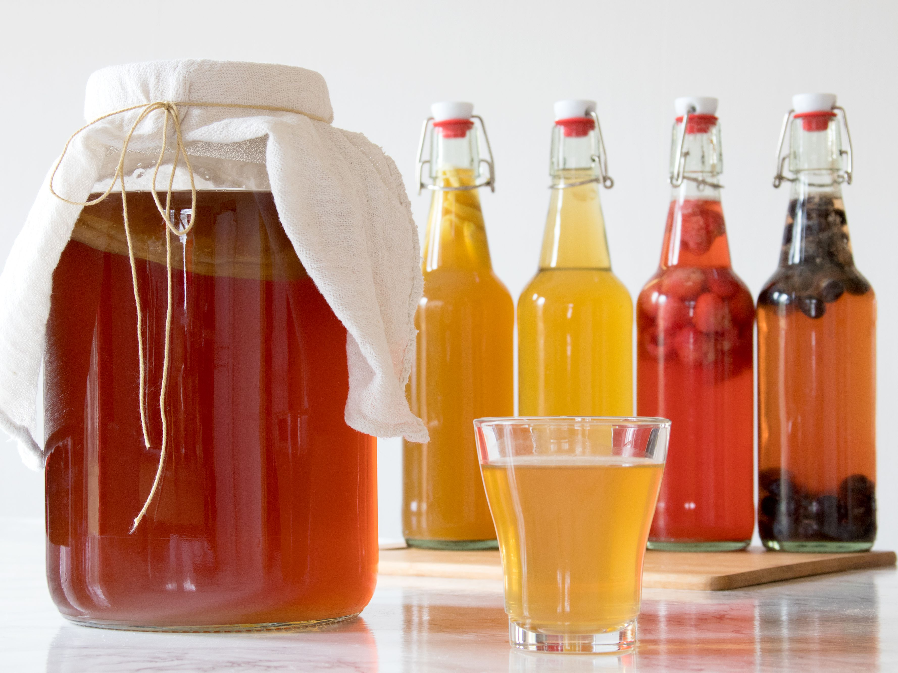

Kombucha

Recipe Source
What is Kombucha?
Kombucha is a fizzy drink made by fermenting sweetened tea. It starts off tasting like your average glass of sugary Southern sweet tea, but after a week or two of fermentation, it transforms into a tart, tangy, effervescent beverage. It’s not for everyone, certainly, but for those of us who love those kinds of flavors, it’s unbeatable.
This fermentation is made possible thanks to something called a SCOBY. This stands of “symbiotic culture of bacteria and yeast.” Dig around the internet for long enough and you might also hear this scoby referred to as a “mother” or a “mushroom.”
The scoby looks and feels like a flat, rubbery, beige-colored pancake—not the most appealing thing, to be sure, but it houses all the yeast and beneficial bacteria needed to ferment the sweet tea into kombucha. It's similar to the mother used to make vinegar or the starter used to make sourdough bread.
What Are the Benefits of Kombucha?
Why would anyone want to make fermented tea using a blobby pancake? Well, aside from just liking the way it tastes, kombucha also contains a lot of beneficial probiotics, which many of us believe help out with gut health.
You hear a lot of pretty far-out health claims about kombucha — everything from “it made my acne go away” to “it cures baldness.” Personally speaking, I just find that regularly drinking kombucha seems to keep my whole digestive system happy. It’s not a cure-all and it’s doesn’t produce miracles, but personally, I think it’s overall beneficial for my health.
If you’ve never tried kombucha before, I recommend picking up a bottle at the store before making it yourself just to see if you like it. GT’s is a very good, widely available brand, though it tends to be fairly vinegary and tart. If you want a gentler introduction, seek out locally made brands of kombucha, which I often find to be sweeter and less assertively vinegary.
For more information including how to make a scoby, read the full article.
Ingredients
- 3 and 1/2 Quarts Water: Filtered water or spring water is best for making kombucha, but if your tap water tastes good to drink, then it’s usually totally fine to use it to make kombucha.
- 1 Cup Sugar:You can use any cane or beet sugar to make your kombucha, including regular table sugar, turbinado, demerara, sugar-in-the-raw, or brown sugar. Alternative sugars, like agave and coconut sugar, are trickier to work with and can cause problems with fermentation; wait to experiment with them until you have more experience brewing kombucha. Do not use artificial sweeteners like stevia or Sweet-and-Low; these will not work to make kombucha.>
- 8 Bags Caffeinated Tea:Any caffeinated tea can be used to make kombucha: black tea, green tea, oolong tea, or white tea. Avoid herbal teas or any teas with essential oils (like Earl Grey); these can cause problems with fermentation and potentially lead to mold growth on the scoby.>
- 2 Cups Unflavored "Prepared Kombucha":For the “prepared kombucha” either use store-bought, unflavored kombucha or a few cups of homemade kombucha saved from your last batch. (Flavored kombuchas can cause mold growth on the scoby, but I have heard from people who've successfully used ginger kombucha and citrus-flavored kombuchas for this ingredient.)
- The Scoby:You can get a scoby from a kombucha-making friend, grow one yourself, or order one online from a place like Kombucha Kamp. If you order online, I recommend getting a “live” scoby in its liquid rather than a dehydrated scoby if possible; live scobys are generally heartier and easier to get going than dehydrated scobys.
- To Flavor: 2 to 3 cups of juice, 1 to 2 cups chopped fruit, 2 to 4 tablespoons fresh herbs or spices
Steps
- Make the sweet tea base: Bring 1 quart of the water to a rolling boil in the stockpot. Add the sugar and stir until the sugar has dissolved.
Remove the pot from heat and add the tea (if you’re using loose leaf tea, put it in a tea ball first). Let stand for at least 10 minutes to steep the tea, though it’s also fine if you end up letting the tea sit for a few hours.
Remove the tea before continuing.
- Combine all the liquids in a 1-gallon glass jar: Pour the sweet tea into a 1-gallon jar and add the remaining 2 1/2 quarts of water.
Check the diluted sweet tea mixture with a clean finger to make sure it has cooled sufficiently before adding the prepared kombucha or the scoby; it should be lukewarm (or cooler) to the touch. If it still feels hot, wait for it to cool before continuing.
Stir the prepared kombucha into the diluted sweet tea. Be sure to include any blobs or floaty bits that are in the kombucha.
- Slip the scoby into the jar of liquid: The scoby might float on top of the liquid, sink to the bottom, or hover somewhere in the middle—wherever the scoby ends up resting is completely fine.
- Cover the jar with a double-layer of cloth and secure with a rubber band: The cloth allows airflow in and out of the jar, which is necessary for fermentation, but the tightly-woven cloth and the tight rubber band will prevent dust and bugs from getting through.
- Place the jar somewhere out of the way, away from direct sunlight, and at a steady room temperature: Ideally, you want the jar where you can check it every so often over the next week or two, but where you don’t have to constantly move it around. An unused corner of your countertop, a kitchen cupboard, or an out-of-the-way shelf is great. Complete darkness isn’t necessary; just make sure it won’t be exposed to direct sunlight.
Kombucha ferments best between 70°F and 75°F. Warmer temperatures make it ferment more quickly and cooler temperatures make fermentation slow down. Avoid temperature extremes; move the jar of fermenting kombucha somewhere more moderate if the temperature rises above 90F or below 68F during the daytime.
- Let the kombucha ferment for 7 to 14 days, or until it tastes good to you: I recommend fermenting the kombucha for at least 7 days, but there really is no minimum or maximum time. Start tasting the kombucha after a few days—just pour a little into a glass.
In the first few days of fermentation, the kombucha will taste very sweet – like sweetened tea – but then it will gradually become more tart and vinegary the longer it ferments. You will also start to notice a vinegary aroma around the jar. This is a sign of healthy fermentation.
Continue tasting the kombucha every few days until it tastes good to you. Once it tastes good, it’s ready!
- Remove the scoby and set aside: When your kombucha tastes good to you and you’re ready to bottle it, move the jar to your countertop where you have some room to work. Have a bowl, a liquid measuring cup, a few clean glass or plastic bottles, and a small funnel nearby. (There is no need to sterilize your kombucha jars; just make sure they are clean and fully rinsed of any soap.)
With clean hands, reach into the jar of kombucha and grab the scoby, including any new layers that have formed. Lift it out and transfer it to the bowl.
As you transfer it, check it over to make sure there are no signs of fuzzy mold growth. Leave any wet brown clumps of yeast attached. If your scoby has formed a new layer, you can leave it attached, pull off and discard the older layer, or divide the layers and use each one to brew its own batch of kombucha.
Pour out 2 cups of your kombucha and pour it over the scoby. Use this as your “prepared kombucha” for your next batch. At this point, you can either start a new batch of kombucha right now using this scoby and liquid, or you can cover the bowl and keep the scoby and liquid at room temperature until you’re ready to make another batch. (You can store your scoby this way for up to a month or two; add additional sweetened tea as needed to keep the scoby covered.)
- Bottle the remaining kombucha: Divide the remaining kombucha between your bottles. I find it easiest to pour the kombucha into a measuring cup, then pour it into the bottles using the small funnel. If you like, add some juice, chopped fruit, fresh herbs, or spices to each bottle to flavor the kombucha.
Cap each bottle tightly.
- Wait for your kombucha to carbonate: (Optional — i f you don’t really care if your kombucha is fizzy or not, you can refrigerate and drink your kombucha immediately.) Set your capped bottles of kombucha somewhere out of the way, away from direct sunlight, and at room temperature for 1 to 5 days to give them time to carbonate.
Check each day by opening up one of the bottles. When you hear a soft pop! and see bubbles flowing to the surface of the liquid after you open it, it's ready! Refrigerate all bottles and drink within two weeks.
Once the bottles are carbonated, refrigerate immediately. Do not leave bottles of kombucha unrefrigerated for longer than 5 days—otherwise, there is a risk that too much carbonation can build up inside and the bottles may shatter.
- Refrigerate all bottles of kombucha for 24 hours before drinking: Open bottles of kombucha slowly and carefully over a sink; over-carbonated bottles will sometimes gush up when you open them and cause a mess! Consume all bottles within two weeks. The kombucha will continue to very slowly ferment even in the fridge, and you may notice that it gradually becomes more vinegary over time.